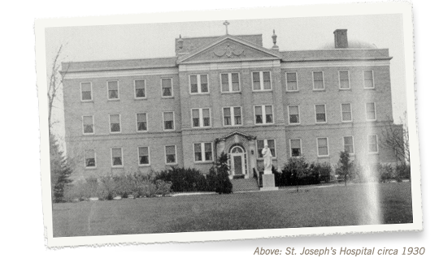
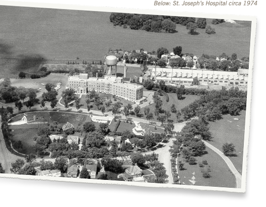
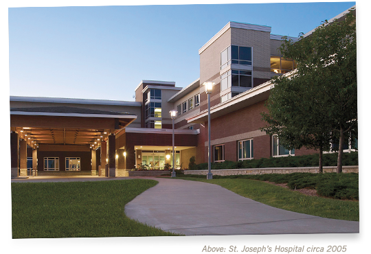

|
|
|
Froedtert Health St. Joseph’s Hospital is here when a person is most vulnerable and also when they least expect it. Our physicians, nurses, staff and volunteers strive to ensure that every interaction our patients, families and visitors have is handled with personalized, trusted care.
Health care is more than just medicine. It is the development of a relationship and often involves a story. It is about interactions on the most basic and personal level between the patient, nurse, physician and family. It can affect your physical, emotional and spiritual senses.
As your community hospital, it is our responsibility to provide you and your family exceptional care, close to home. St. Joseph’s Hospital has provided the communities in greater Washington County with quality health care and services for many generations.
When someone makes a gift, another receives. The generous contributions of the individuals included in this Generations of Giving program not only strengthen our community but support the health and well-being of the individuals, families and local businesses that make up a community.
It is because of the generosity of previous generations that access to quality, local health care and the specialty services of an academic medical center are available at this community hospital.
Please take a moment to learn more about the history of St. Joseph’s Hospital, the donors who are committed to quality health care close to home, and how St. Joseph’s collaborates with other community leaders in identifying and addressing community health needs and concerns.
We are proud of our commitment to the health and well-being of our area residents. Please join us in helping to make Washington County a healthier place to live, work and raise a family.
A gift to St. Joseph’s Hospital, the Kathy Hospice or Kraemer Cancer Center through St. Joseph’s Community Foundation allows you to invest in local health care facilities and services that will provide a benefit for many years to come. Your gift will provide essential funding for patient-friendly facilities,
state-of-the-art technology and programs for those livingHow you in greater Washington County communities.
The generous support of our neighbors and friends helps to ensure that everyone has access to advanced, comprehensive care close to home.
Volunteers are individuals willing to step forward to help someone else or they are willing to advocate for a purpose that is important to them.
At St. Joseph’s Hospital, the Partners volunteer organization is comprised of over 165 adult volunteers and “volun-teens” that support our patients, families, visitors and staff in a variety of ways and in almost every department within the hospital, the Kathy Hospice and Kraemer Cancer Center.
Volunteers have been serving St. Joseph’s Hospital since 1937. What began with a group of women known as the Pink Ladies, they later changed their name to the Guild, and then the Auxiliary, as the years passed. This committed group of both women and men are now known as the Partners of St. Joseph’s Hospital.
Volunteers of all ages give generously of their time and talents in the Partner organization.
Annually, they provide over 17,000 hours of service and are the faces you see at the greeter desks, in the Well Wisher Gift Shop and transporting patients to different areas throughout the hospital and clinics.
They are the friendly face, in the green vest, that is ready and willing to provide directions, share a warm smile or offer conversation as patients and visitors move throughout their appointments or wait for a loved one.
We are proud of our commitment to the health and well-being of our area residents. Please join us in helping to make Washington County a healthier place to live, work and raise a family.
The Partner volunteers are a very important aspect to the personalized, trusted care provided at St. Joseph’s Hospital.
They are community members who understand the importance of having quality health care and a state-of-the art facility, close to home. They have been your friends, family, neighbors, business professionals and community leaders that have a heart of gold and a passion for helping others.
Special event fundraisers are important as they raise needed financial support for an organization, provide increased awareness about its mission and services offered and often attract more volunteers for the cause being promoted.
St. Joseph’s Community Foundation is fortunate to be the recipient of the community-organized fundraisers “Daniel Rozek Memorial Classic Golf Outing” and “Element of Art Night”. These events are especially important and their success is due to the hundreds of committed and thoughtful volunteers and business leaders who share their time and talent to raise funds for a cause they truly believe in.
St. Joseph’s Community Foundation also organizes a fundraiser each year that impacts many lives. Proceeds from this event have provided additional patient care and program resources for the Kraemer Cancer Center that would otherwise not have been possible.
For more information about any event, call 262-836-7828 or send a message to receive details using the link below.
Held annually in September, the Daniel Rozek Memorial Classic Golf Outing is a fun, scramble-format golf tournament is organized by the Rozek Family as a tribute to Daniel Rozek, devoted father, loving husband, and grandfather. Proceeds raised from this event benefit the patients and families at the Kathy Hospice at St. Joseph’s Hospital. In six years, this community organized, volunteer driven event has raised over $59,300 for the Kathy
Hospice at Froedtert Health St. Joseph’s Hospital. A special thank you to the title sponsor for the event Kilian Management Services/McDonald’s and the many area businesses and organizations that provide their support and donations each year.
For more information about golf or sponsorship opportunities, call 262-836-7828 or send a message to receive details using the link below.
Healing Elements Day Spa hosts this annual event held in November. The event is free of charge and features a gallery of local artists and a variety of unique silent auction packages. Local high school students display their current art as well. Proceeds raised from this event benefit the patients and families at the Kathy Hospice at St. Joseph’s Hospital.
For more information about the event, call 262-836-7828 or send a message to receive details using the link below.
Annually, St. Joseph’s Community Foundation holds an Impact A Life event which raises financial resources that support the strategic priorities and current initiatives of Froedtert Health St. Joseph’s Hospital, the Kathy Hospice or Kraemer Cancer Center. St. Joseph’s Community Foundation’s theme for this annual event is A Kentucky Derby Evening. Festivities include a fabulous evening of virtual horse racing, millionaire’s row, hat parade, photo finish area, abundant food stations, Derby punch, signature desserts and uniquely distinct silent auction packages and a lifetime experiences auction. Pictured are Kevin & Linda Steiner and Dr. Timothy & Jamie Mullin at the 2012 Impact a Life event themed “A Kentucky Derby Evening”.
For more information about the event, call 262-836-7828 or send a message to receive details using the link below.
Health care is more than a professional relationship between a physician and their patient. It is a partnership between individuals that are committed to those living and working in the communities served.
St. Joseph’s Community Foundation is the official gift-receiving arm for Froedtert Health St. Joseph’s Hospital, the Kathy Hospice and Kramer Cancer Center. A 501(c)(3) organization, the Foundation works together with hospital administration to identify programs, services or needs that will lead to an exceptional patient care experience, at every opportunity.
The Foundation was created in 2002 by a dedicated group of individuals who realized the importance and need for local health care services, close to home. These individuals, and others, comprise a Board of Directors that is committed to raising and providing financial resources in support of the hospital that will directly benefit the patients and families we have the privilege to provide care for.
The Foundation plays an important role and provides financial resources for department needs throughout the hospital that directly impact patient care.
The work of the Foundation would not be possible if it weren’t for the generosity of our donors, patients, families and employees. It is because of their desire to make a difference, and the actions they have taken by making a contribution, that access to quality health care in the communities which they live and work is possible.
The Foundation is the means by which a grateful patient, family, business or community organization can share their gratitude and support and make a lasting impact on the ever-changing face of health care.
Gifts to the Foundation are an investment in quality, local health care that will impact not only you and your family, but many generations to come.
Help us to continue the stories of our patients that have spanned many generations and consider a gift to St. Joseph’s Community Foundation. Support our goal of providing an exceptional patient care experience, every opportunity we are given.
Everyone has the ability to make a difference at some point in their life. It’s up to you to determine what it is you will do.
Everyone has the ability to give in one way or another and we all have different reasons for giving. One thing we have in common when it comes to giving is the ability to make a difference.
At St. Joseph’s Hospital, every gift makes a difference and impacts the care we are able to provide for our patients and families. That difference often is not seen until a health care issue arises. St. Joseph’s Community Foundation, the official gift-receiving arm for the hospital, provides financial resources that allow for an exceptional patient care experience, at every opportunity given.
Contributions received through St. Joseph’s Community Foundation support current and future initiatives of St. Joseph’s Hospital, the Kathy Hospice and Kraemer Cancer Center.
Generations of giving from countless individuals, businesses and organizations in the community has allowed St. Joseph’s Hospital to remain a health care leader in Washington County. We are forever grateful for the support and generosity of many, and the loyalty that has been shared for decades.
Contributions to St. Joseph’s Community Foundation are making a difference in the lives of the patients and families we have the privilege to care for. The Foundation is the official fundraising arm for Froedtert Health St. Joseph’s Hospital and provides support for programs and services of the hospital, the Kathy Hospice and Kraemer Cancer Center.
It is because of the generosity of our donors that needed equipment, programs, services, education and training that otherwise may not be included in department budgets can be provided.
Some examples of how gifts to the Foundation have been put into action include the purchase of the following items for their respective departments.
|
|
|
Gifts to the Foundation, no matter the size, are an investment in the overall organization and the health of the communities we serve.
We are grateful for the support and appreciate the thoughtfulness of our generous donors, friends and families that span generations.
Meeting the health care needs of the community isn’t something St. Joseph’s Hospital can do alone. Partnerships and collaborations, spanning many years, with individuals, business leaders, area non-profits and health care-related organizations is what has made this community and its local health care services strong.
The following are examples of how St. Joseph’s Hospital is committed to creating healthier communities.
St. Joseph’s Hospital exists because people need good medical care close to home provided by good people who care about them. St. Joseph’s has always played a critical role in the quality of life for residents of greater Washington County.
The hospital is the first line of defense against acute disease and injury. It is where lives are saved and new ones begin.

In 1930, the construction of St. Joseph’s Hospital, a four-story brick building on what was at that time the edge of West Bend, a city of about 4,000 people, began. The need for a modern hospital to serve the entire community was quite evident. Prior to this, doctors treated patients at home or in one of the small, private residences that served as a hospital.

Doctors and community leaders worked out an agreement with the Sisters of the Divine Savior to jointly finance the 25-bed hospital. The local American Legion Post generously donated a site and, once completed, the Sisters took over and operated the hospital. This marked a new era in medical care for residents living in this area.
Over the years technology changed the way health care was delivered and how business was conducted. The hospital continued to expand in size and faced rapid changes throughout the organization in the areas of patient care, compliance and quality reporting requirements. New services and programs were added in order to meet the changing needs of those living and working in the community.

In 2005 after outgrowing the original structure and multiple expansions, the current St. Joseph’s Hospital was built. It was a tribute to the past 75 years of service to the community and incorporated the vision of the area’s future health care needs and room for growth.
The community counts on St. Joseph’s Hospital for high-quality emergency care, as well as inpatient and outpatient care. Health care isn’t something that exists only in a hospital or doctor’s office it’s how we care for ourselves and each other every day.
St. Joseph’s Hospital offers a wide array of health care services including primary care, emergency services, surgical procedures and diagnostic radiology. The hospital also offers expanded specialty services to the residents of Washington County through the Froedtert & The Medical Collage of Wisconsin Specialty Clinics.
The community has access to leading medical experts in cardiology, colorectal surgery, internal medicine, infectious disease, physical medicine and rehabilitation, plastic surgery, urology and vascular surgery, close to home, where they live or work.
At St. Joseph’s Hospital, our mission is to provide personalized, trusted care. This is essential to our community. It is a shared mission that our physicians, medical staff and hospital professionals take seriously.
We are fortunate in that many generous individuals and businesses have chosen to make our mission their own through a gift to St. Joseph’s Community Foundation, knowing they are helping to build a healthier future for coming generations.
As health care continues to change one thing will remain constant and that is extraordinary care for our patients and their families, from outstanding medical staff, in a state-of-the-art facility.
St. Joseph’s Hospital is here to assist with your health care needs, in good times and in bad. We are like family, we are your community hospital.
At St. Joseph’s Hospital, every gift makes a difference and impacts the care we are able to provide for our patients and families. That difference often is not seen until a health care issue arises. St. Joseph’s Community Foundation, the official gift-receiving arm for the hospital, provides financial resources that allow for an exceptional patient care experience, at every opportunity given.
Contributions received through St. Joseph’s Community Foundation support current and future initiatives of St. Joseph’s Hospital.
Alyce Kraemer was not one who sought recognition. She simply and quietly enjoyed helping others and appreciated opportunities when she could give back to the community in which she lived for over 80 years.
In 1998 at the age of 95, Mrs. Kraemer provided an anonymous gift of $2 Million on behalf of herself and her husband, Elmore Kraemer, to the cancer care center at what was then known as St. Joseph’s Community Hospital. It wasn’t until she passed away in 2004, at the age of 101, that the anonymous donor’s name was revealed along with her generous spirit.
Mrs. Kraemer was a school teacher and taught Kindergarten in West Bend for six years in the 1920’s. Her classes included students who, generations later, were from families that continue to support the Kraemer Cancer Center and what has now become Froedtert Health St. Joseph’s Hospital.
Mrs. Kraemer enjoyed being able to see while she was still living how her donation benefitted others. She provided the support she did out of the goodness of her heart and without the need to be recognized. Not only was she a teacher by trade, but through her kindness and generosity she provided a true life lesson about giving back, and the importance of supporting the community in which you live and work.
The Kraemer Cancer Center at Froedtert Health St. Joseph’s Hospital is a 21,000 square foot facility dedicated to a compassionate, healing environment that offers privacy, individualized specialty treatment, coordinated care and convenience for our patients.
At the cancer center, advanced technology and extensive cancer services are offered to those dealing with a cancer diagnosis along with access to the specialty expertise of Froedtert & The Medical College, eastern Wisconsin’s only academic medical center. Through this partnership, residents of Washington County have access to expanded services as well as nationally and internationally known cancer specialists who focus on advanced treatments, technology and clinical trials.
Within the cancer center is the Small Stones Wellness Center, with products and services designed for patient comfort and well-being, as well as one-on-one consultations to help patients look their best through treatment and beyond. Support for Small Stones is provided by St. Joseph’s Community Foundation.
St. Joseph’s Community Foundation would like to thank our many donors who support Froedtert Health St. Joseph’s Hospital and the Kraemer Cancer Center. Your gifts provide essential funding for patient-friendly facilities, state-of-the-art technology and cancer care programs for those living and working in the greater Washington County areas. The generous support of our neighbors and friends helps to ensure that everyone has access to advanced, comprehensive cancer care close to home.
“Never underestimate your own abilities, as you are probably better than you thought you were.” Ray Moser, a lifelong resident of West Bend, shares this thought with many people as he travels throughout the country as an accomplished trap shooter. His advice provides encouragement to a younger generation of trap shooters.
Little did Ray know that by “never underestimating” what he could do would make a difference for the Alyce and Elmore Kraemer Cancer Care Center of St. Joseph’s Hospital. In January 2010, Ray generously contributed $20,060 to the center in memory of the love of his life, Wyleene Moser, who lost her battle with lung cancer in October 2009. Ray and “Wy,” as she was affectionately known, met when Ray asked her to dance the Blue Tango. They continued their love for dancing on a weekly basis for over 55 years.
Ray’s gift will benefit patients and families receiving care at the Cancer Care Center. It is a wonderful way to remember the life and love Ray and Wy shared. It is also a reminder that there are incredibly talented people in all walks of life who, when given the opportunity, choose to make a difference.
The Kathy Hospice, nestled in a gently sloping valley on the St. Joseph’s Hospital campus, opened in February 2006 and is named in memory of Kathy Komas, who passed away from cancer in 2002.
The Kathy Hospice was made possible by a generous lead gift and commitment on the part of Ron Komas, Kathy’s husband. The campaign to build eight private patient suites was conducted by St. Joseph’s Community Foundation.
This facility serves an important community need. It is designed for individuals with a terminal illness and is dedicated to providing supportive, palliative care in a peaceful, home-like setting.
Contributions to the Kathy Hospice play a critical role in supporting this important community resource. Gifts to the hospice benefit three key areas and may be designated according to the donor’s wishes.
Generations of giving from countless individuals, businesses and organizations in the community has allowed St. Joseph’s Hospital to remain a health care leader in Washington County.
St. Joseph’s Community Foundation would like to thank the many donors who have chosen to support the Kathy Hospice at St. Joseph’s Hospital. These gifts provide essential funding for supportive care for our patients and families dealing with an end-of-life journey in a welcoming, home-like setting.
The support of our neighbors and friends helps to ensure that everyone has access to end-of-life care close to home. We are forever grateful to those who have so thoughtfully given.